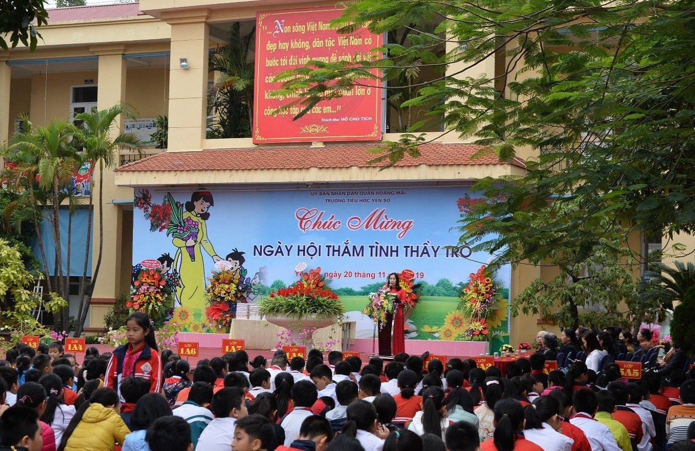
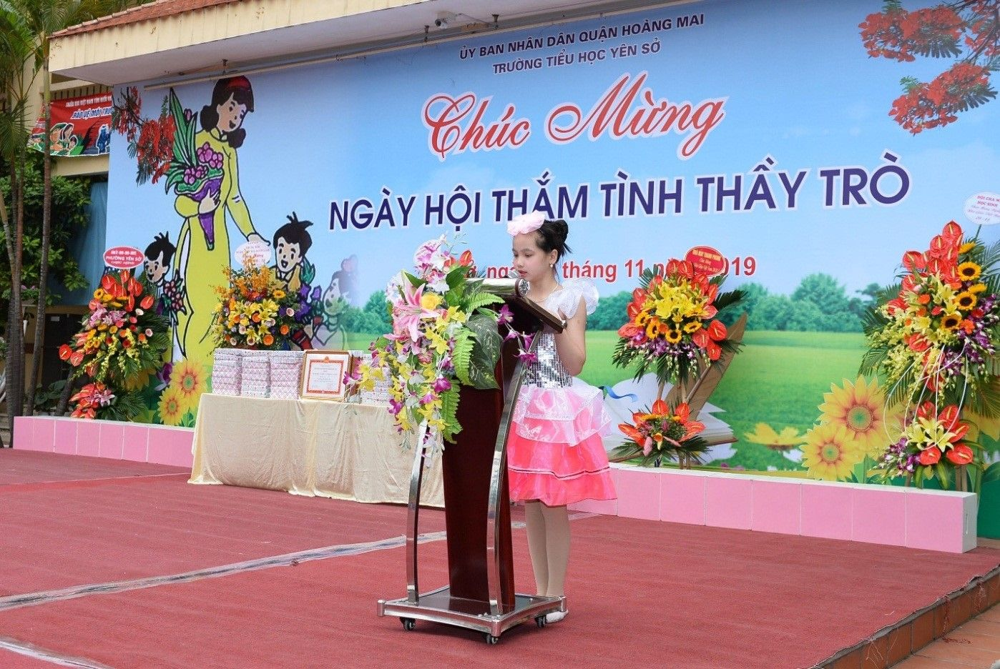
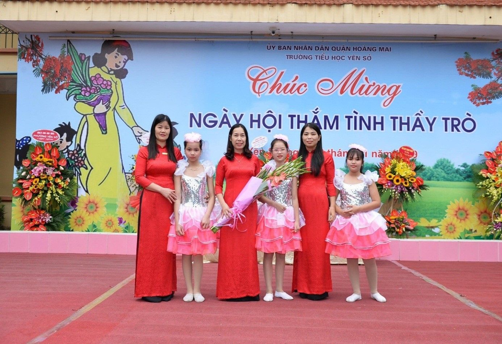
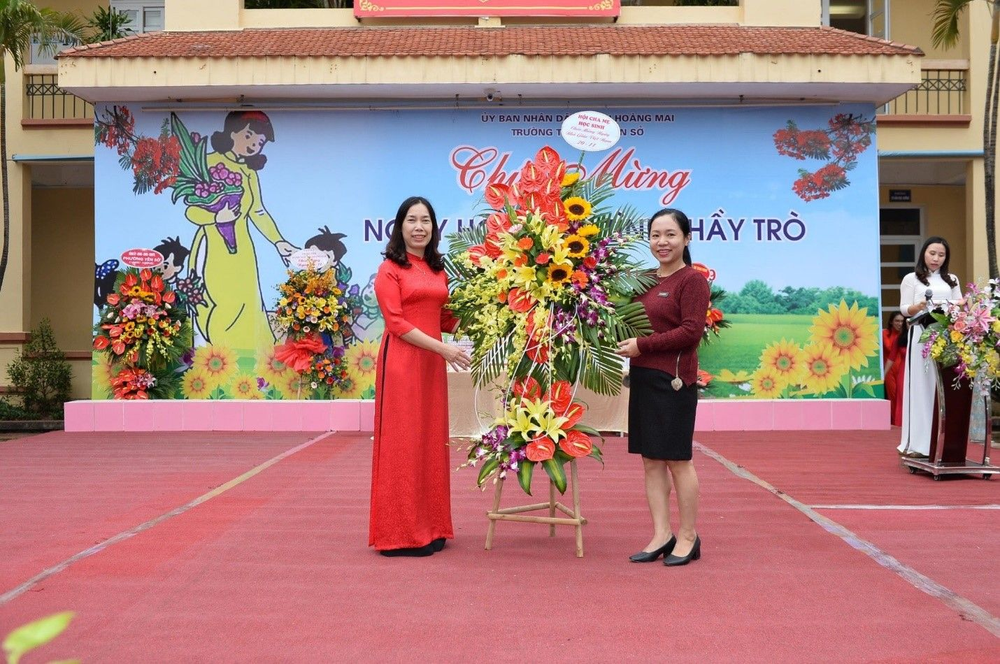
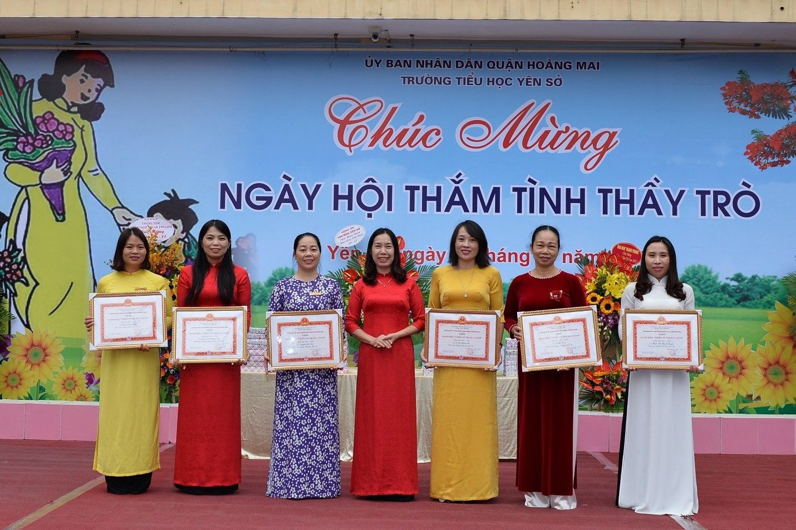
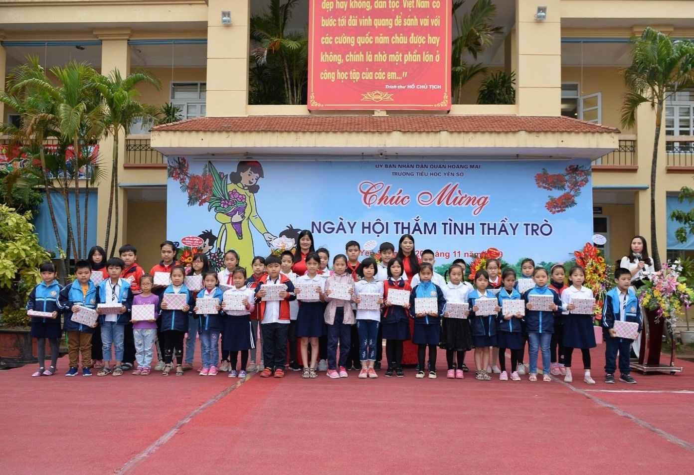
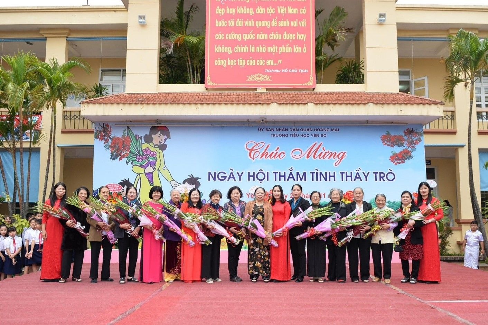
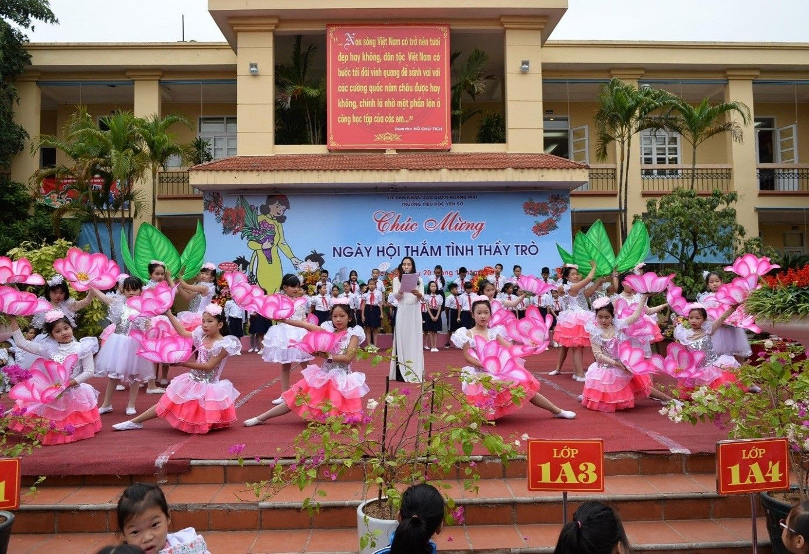

TRƯỜNG TIỂU HỌC YÊN SỞ TỔ CHỨC NGÀY HỘI THẮM TÌNH THẦY TRÒ NHÂN KỈ NIỆM 37 NĂM NGÀY NHÀ GIÁO VIỆT NAM
Dân tộc Việt Nam ta vốn có truyền thống "Tôn sư, trọng đạo" bởi người thầy đã góp phần hun đúc nên tâm hồn Việt Nam qua các thời kì, là cầu nối giữa quá khứ với hiện tại và tương lai dân tộc. Trong xã hội xưa, vị trí người thầy đã được đặt rất cao. Ca dao cũng có câu: "Muốn sang thì bắc cầu Kiều, muốn con hay chữ thì yêu lấy thầy". Trong chế độ mới, người thầy được tôn vinh là: "Kĩ sư tâm hồn", nghề dạy học là: "Nghề cao quý nhất trong những nghề cao quý, vì nó sáng tạo ra những con người sáng tạo".
Trong không khí hân hoan của cả nước hướng về ngày nhà giáo Việt Nam 20/11, ngày mà cả xã hội với tấm lòng trân trọng tôn vinh công lao cao cả đối với nhà giáo, chúng ta ai cũng có một niềm tin yêu của một thời thơ ấu, những tâm hồn trong trắng tuổi học trò cũng đang suy nghĩ về thầy cô kính mến của mình với lòng biết ơn sâu đậm và niềm tôn kính vô hạn.
Hòa chung với khí thế tưng bừng, phấn khởi của ngành giáo dục cả nước kỉ niệm 37 năm ngày nhà giáo Việt Nam (20/11/1982 - 20/11/2019), hôm nay ngày 20/11/2019, trường Tiểu học Yên Sở đã long trọng tổ chức “Ngày hội thắm tình thầy trò”. Đây là hoạt động thường niên nhằm tôn vinh nghề nghiệp cũng như thay cho lời cảm ơn sâu sắc với công sức lớn lao của các thầy cô giáo trong sự nghiệp trồng người.
Ngay từ buổi sáng sớm, không khí ngày 20/11 đã rất rộn ràng. Các cô giáo trong những trang phục áo dài truyền thống thướt tha đầy màu sắc phấn khởi tham dự Ngày hội.
Về dự Ngày hội thắm tình thầy trò của nhà trường, có các thầy cô giáo đã từng công tác tại trường nay đã nghỉ hưu; đại diện các doanh nghiệp trên địa bàn phường; các ông bà trong Ban đại diện cha mẹ học sinh của trường; cùng tất cả thầy cô giáo và toàn thể học sinh trường Tiểu học Yên Sở.
Mở đầu chương trình chào mừng ngày 20/11, cô Nguyễn Thị Hồng – Bí thư chi bộ, Hiệu trưởng nhà trường lên phát biểu chào mừng Ngày hội thắm tình thầy trò.

Cô Nguyễn Thị Hồng – Bí thư chi bộ, Hiệu trưởng
nhà trường lên phát biểu chào mừng ngày 20/11.
Trong ngày hội tưng bừng này, em Nguyễn Hương Trà, học sinh lớp 5A1 thay mặt cho hơn 2092 em học sinh trường Tiểu học Yên Sở lên bày tỏ tình cảm của các em học sinh trong “Ngày hội thắm tình thầy trò” và tặng hoa chúc mừng các thầy cô giáo.

Em Nguyễn Hương Trà học sinh lớp 5A1 phát biểu cảm nghĩ

Các em học sinh lên tặng hoa Ban giám hiệu nhà trường
Về dự với buổi lễ, bà Cao Phương Dung – đại diện Hội cha mẹ học sinh lên tặng hoa và chúc mừng các thầy cô giáo.

Đại diện Hội Cha mẹ học sinh lên tặng hoa nhà trường.
Cố thủ tướng Phạm Văn Đồng đã từng nói: “Nghề dạy học là nghề cao quý nhất trong những nghề cao quý, nghề sáng tạo nhất trong các nghề sáng tạo”. Có thể thấy xã hội đã tặng cho người thầy vinh dự lớn lao và trách nhiệm nặng nề. Đặc biệt, vị trí người thầy trong xã hội Việt Nam từ bao đời nay là biểu tượng cao quý tượng trưng cho trí tuệ, tài năng. Tục ngữ có câu “ Không thầy đố mày làm nên”. Chính vì những lẽ ấy, tập thể cán bộ, giáo viên và nhân viên nhà trường không ngừng thi đua dạy tốt, cống hiến hết mình vì sự nghiệp giáo dục và đã đạt được nhiều thành tích đáng ghi nhận. Năm học 2018 - 2019, nhà trường đã vinh dự được đón nhận Bằng khen Tập thể có thành tích xuất sắc trong phong trào thi đua “Đổi mới sáng tạo trong dạy và học” do Bộ trưởng Bộ Giáo dục và Đào tạo trao tặng. Đó là sự ghi nhận của cấp trên đối với những thành tích nổi bật mà nhà trường đã đạt được trong những năm học vừa qua.
Cùng với những thành tích mà tập thể nhà trường đạt được, các thầy cô giáo cũng đạt được những thành tích rất đáng tự hào trong năm học 2018-2019. Đặc biệt, cô Nguyễn Thị Hồng – Bí thư chi bộ, Hiệu trưởng nhà trường đã được tặng bằng khen của Bộ trưởng bộ Giáo dục và đào tạo vì đã có thành tích xuất sắc trong phong trào thi đua “Đổi mới, sáng tạo trong dạy và học” và có 7 đồng chí đạt danh hiệu Chiến sĩ thi đua cơ sở.
Trong ngày hội tưng bừng này, để cảm ơn những nỗ lực, phấn đấu không biết mệt mỏi của các thầy cô giáo, trường Tiểu học Yên Sở đã trao phần thưởng cho các giáo viên đạt thành tích xuất sắc và các tập thể lớp đạt giải tập san chào mừng ngày Nhà giáo Việt Nam 20/11.

Đồng chí Nguyễn Thị Hồng - Bí thư chi bộ, Hiệu trưởng trao giấy khen cho các đồng chí đạt danh hiệu Chiến sĩ thi đua cơ sở

Các lớp lên nhận phần thưởng tập san chào mừng 20/11.
Tiếp theo chương trình, các đồng chí trong Ban giám hiệu nhà trường và các em học sinh lên tặng hoa chúc mừng các đồng chí cán bộ giáo viên hưu.

Ban giám hiệu nhà trường tặng hoa các đồng chí cán bộ, giáo viên hưu.
Chương trình khép lại với những tiết mục văn nghệ đặc sắc do các thầy cô giáo và các em học sinh trường Tiểu học Yên Sở biểu diễn.

Các em học sinh với tiết mục “Thầy cô là tất cả”
Ngày hội thắm tình thầy trò nhân kỉ niệm 37 năm ngày nhà giáo Việt Nam diễn ra trong không khí tưng bừng trang nghiêm và đầy ấn tượng đã để lại trong lòng mỗi học sinh một kỉ niệm đáng kính về các thầy cô giáo của mình. Sau lễ mít tinh diễn ra tại sân trường các thầy cô giáo đã về hưu và các thầy cô giáo đã về phòng Hội đồng sư phạm để tọa đàm giao lưu thân mật trọng bầu khí vui tươi của ngày lễ.
Những hoạt động trong Ngày hội thắm tình thầy trò đã khép lại nhưng dư âm của ngày hội sẽ còn vang mãi trong mỗi chúng ta. Mỗi cán bộ, giáo viên, nhân viên và mỗi em học sinh nhà trường đã, đang và sẽ bằng những hành động cụ thể, thiết thực thi đua dạy tốt, học tốt lập được nhiều thành tích trong năm học này để không phụ sự mong mỏi của các cấp lãnh đạo, các bậc phụ huynh cũng như tất cả các thầy cô giáo và các em học sinh.